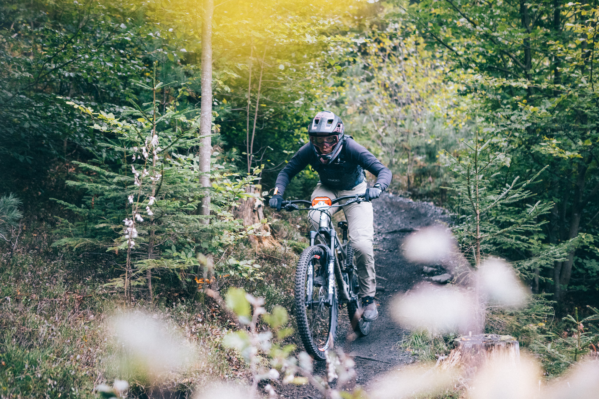
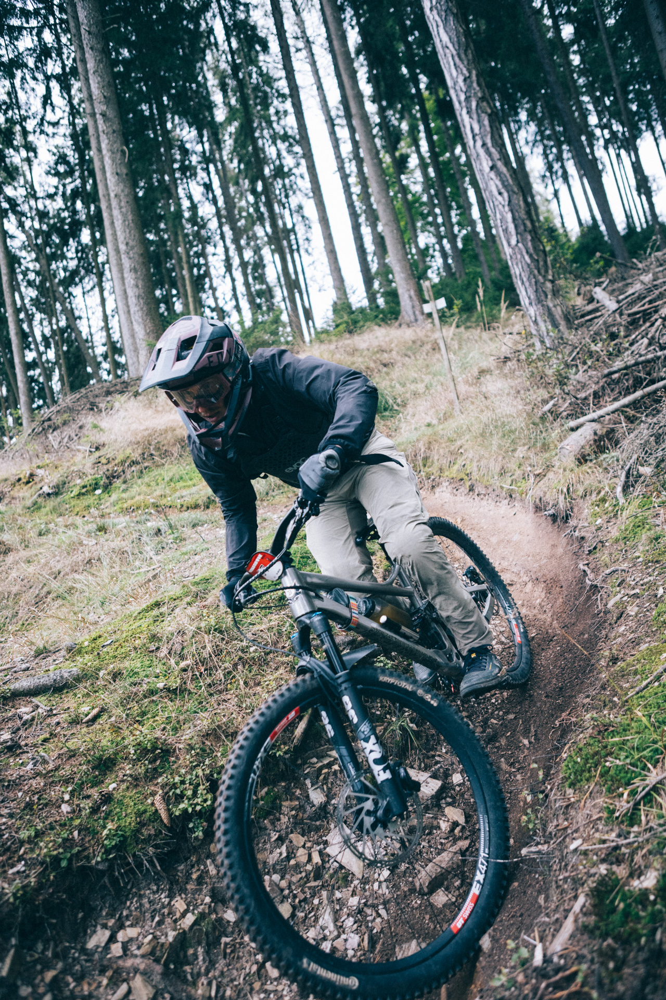

For as long as I've been riding mountain bikes, one thing has been quietly on my list: race one. Not to win. Not to podium. Just to line up, pin a number, and find out what actually happens when you ride trails under pressure, surrounded by people who take this seriously.
This year I finally did it. The event was Trail Partie — organised by Lines Magazine Austria, held at the Brucker Hochanger in Bruck an der Mur. Four stages over a weekend, officially classified as a "fun race where timing just happens to exist." That framing is generous. The people who showed up were fast.
How the weekend worked

Saturday was for getting acquainted. You could ride the stages solo or with others, figure out your lines, walk the technical sections, decide where to push and where to stay conservative. It's a format that rewards preparation — the riders who had their lines dialled on Sunday clearly spent Saturday doing the work.
Sunday morning arrived cold and drizzly. Not ideal, but the trails held up surprisingly well. There's something about racing in slightly grim weather that concentrates the mind. You stop overthinking and just ride.
Four timed stages on the Hochanger. Every metre of descent had to be earned first — no lifts, no shuttles, just pedalling up under your own power and then racing down. In total, around 800 vertical metres across the day — not a sufferfest by any measure, but enough to find out exactly where your fitness stands.
I should be honest about my preparation: it wasn't exactly structured. Two small kids, a full-time job, and a bike that gets out when life allows. I showed up having ridden when I could, not when I planned to. That's the reality for a lot of people, and it's worth saying out loud rather than pretending otherwise.
Here's something that happens when you mostly ride alone or with the same group of friends: your sense of your own level quietly drifts upward. There's no external reference point. You get better, your friends get better, everyone gets better together, and somewhere along the way you start to assume you're reasonably competent on a bike.
A race fixes that very quickly.
I finished somewhere in the back third of my category. Not last — I want to be clear about that — but not close to the front either. And the gap to the faster riders wasn't marginal. The competition was genuinely strong, in a way that was both sobering and, honestly, motivating.
What I noticed most clearly was what fatigue does to technique. Early in the day, I was riding the way I know I can — braking before the corner, carrying speed through, exiting with momentum. By the later stages, the wheels had come off. I was braking in corners, losing speed exactly where I should have been gaining it, and then grinding back up to pace in the straights. Every mistake costs more energy than the mistake itself. It compounds.
That's not new information — any cyclist will tell you fitness and technique are inseparable. But there's a difference between knowing it and feeling it play out across four stages on a cold Sunday morning.
What I learned about where I actually am
The most useful thing the race gave me was specificity. Not just "I need to get better," but where exactly, and by how much.
Technical terrain? Acceptable. Rocky, rooty, awkward-line sections — I held my own there. But the flow sections — the smooth, fast, pumpy stretches where good riders string together rhythm and momentum — that's where I was losing time. Not because I was crashing or making big errors. Just because I wasn't flowing. I was riding segments instead of reading the trail as one continuous thing.
In the weeks after the race, I deliberately stopped seeking out technical challenges and spent almost all my riding time on flow trails. Not because they're more fun — though they are — but because that's where the biggest gap was. Knowing where your leverage is changes how you spend your time.
That's the kind of feedback you can only get from racing. Training rides and group rides tell you a lot, but they don't tell you that. A stopwatch and a field of other riders do.
The part that had nothing to do with performance
I want to say something about the people, because it would be wrong to leave it out.
Trail Partie is a community event at its core. The "fun race where timing just happens" framing is genuine — there's a warmth to it that you don't always find in competitive formats. I met people I'd never crossed paths with before, had conversations on the lifts and at the stage starts that I'm still thinking about, and spent a weekend around people who love this sport in the same unreasonable way I do.
That matters. The result matters less than I thought it would. The experience — two days in the Styrian mountains, four stages, one cold and rainy race morning, and a field full of people who just genuinely wanted to ride good trails — that's what I'll carry.
I'll be back. That much I know.

Trail Partie is organised by Lines Magazine Austria. If you're a mountain biker in the DACH region and haven't heard of it — look it up. It's a good one.